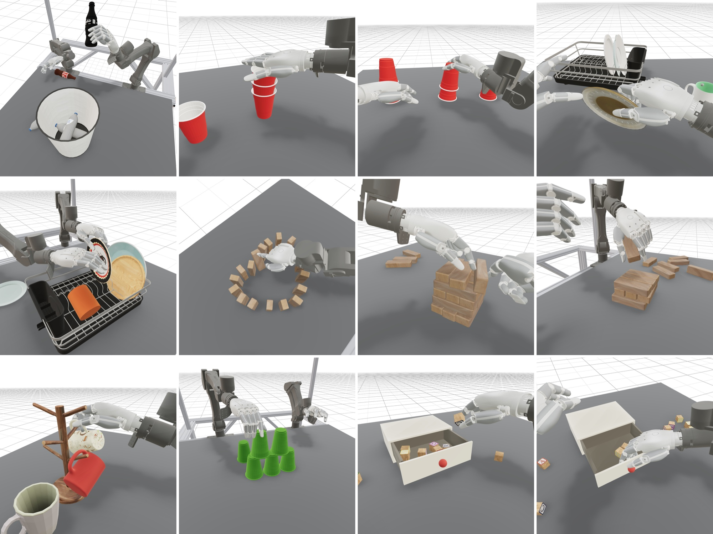
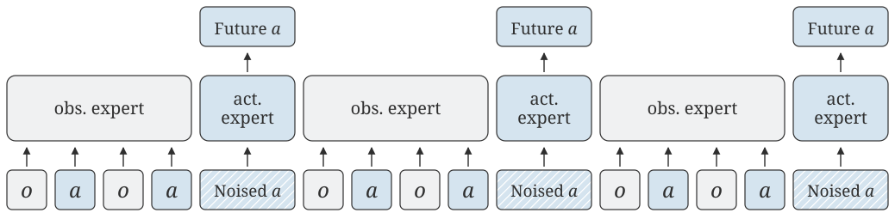
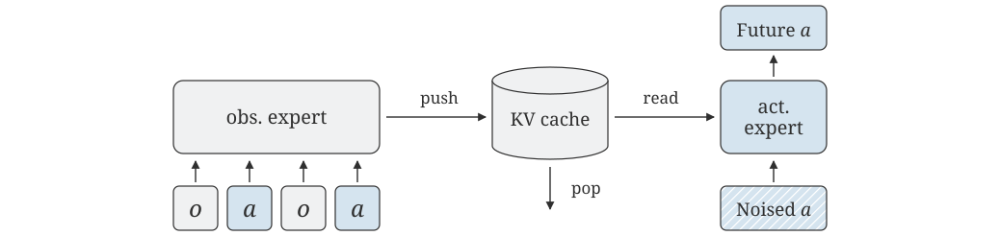

Large-scale pre-training has made robot policy fine-tuning increasingly data-efficient, but this progress has largely been driven by datasets and embodiments built around simple parallel-jaw grippers. Dexterous, multi-fingered hands remain comparatively data-starved because real teleoperation is costly to scale, while human hand video is off-embodiment and requires lossy pose estimation and retargeting. We introduce Simulation Pre-training for Dexterity (SPD), a pre-training framework for dexterous manipulation that uses data entirely collected in simulation: humans manipulate virtual objects inside a VR headset, enabling fast resets, parallel operation, and decentralized collection.
We pre-train a diffusion transformer policy on multi-task simulation demonstrations and study its benefits by fine-tuning on a small number of physical demonstrations on a 56-DoF bimanual dexterous setup. Across five real-world tasks, the pre-trained policy outperforms behavior cloning from scratch, showing that simulation teleoperation is a viable pre-training source for real-world dexterous manipulation.
During collection, the operator controls the bimanual dexterous robot directly in a physics simulator. The headset tracks the operator's hands, which drive the robot's arms and fingers through inverse kinematics, and every hand-object contact is physically simulated. Because collection has no dependence on physical hardware, resets are instant and operators can collect data anywhere, in parallel. Five operators collected 75 hours of demonstrations over one week, spanning six scenes and hundreds of object instances. The tasks are long-horizon and open-ended: they specify the desired outcome without constraining strategy or subtask ordering, so the dataset captures many distinct ways of achieving each task.

Teleoperated demonstrations from spd-75h, spanning six simulated scenes.
After pre-training, we bring the policy to the real world with a short fine-tuning stage. For each task, we collect one to two hours of real demonstrations using a teleoperation system that mirrors the simulation setup, and fine-tune the full policy on them. This stage adapts the policy to real visual appearance, contact dynamics, and task-specific behavior.
Real-world teleoperation.
Our policy is a 222M-parameter diffusion transformer that predicts chunks of future actions from multi-view images and proprioception. Because our data lacks language annotations, the policy conditions on sensorimotor history rather than a language prompt. Each input sequence spans 256 timesteps at 30 Hz, roughly eight seconds of observations and actions, and this history helps the policy act through contact and occlusion.
Training over long histories is expensive, so the model denoises all action chunks in a sequence in parallel under a causal mask, amortizing the cost of processing the full context. Every layer uses sliding-window attention, which becomes a rolling KV cache at deployment. This keeps inference fast enough for the policy to run at 30 Hz with short, 8-step action chunks for reactive control.

Training: prefix-parallel with a causal sliding-window transformer.

Inference: asynchronous with a rolling KV cache.
We evaluate the fine-tuned policies on five bimanual tasks: racking plates, stacking cups, playing Jenga, hanging mugs, and tossing bottles into a bin. All videos below are autonomous rollouts.
To measure the benefit of simulation pre-training, we compare against an identical policy trained from scratch on each task's real demonstrations. Pre-training helps on every task: the SPD policy makes more progress on average across all five, and its training loss starts and converges lower, which prior work finds to be correlated with real-world performance.
Average task progress on five real-world tasks. Error bars show standard error.
We also ablate the sliding window size and the action chunk size. Prior works train with a single frame of context and a long, one-second action chunk, since short chunks make policies less temporally consistent. We observe the same effect: with a single frame of context, an 8-step chunk collapses performance. History conditioning removes this trade-off: with a 32-step window, the 8-step chunk outperforms every other variant, drawing temporal consistency from context and reactivity from the shorter chunk.
Per-task progress for each sliding window and action chunk variant.